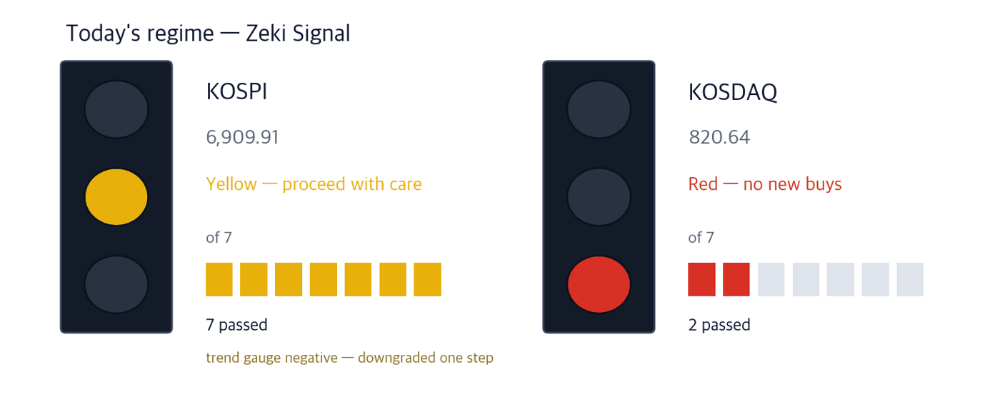
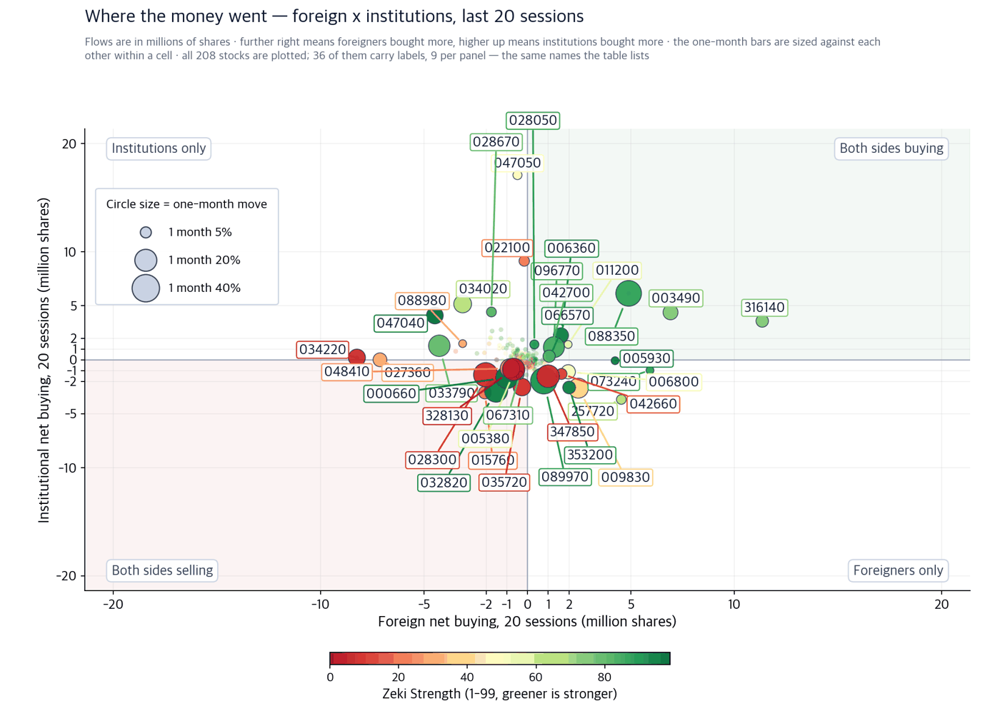
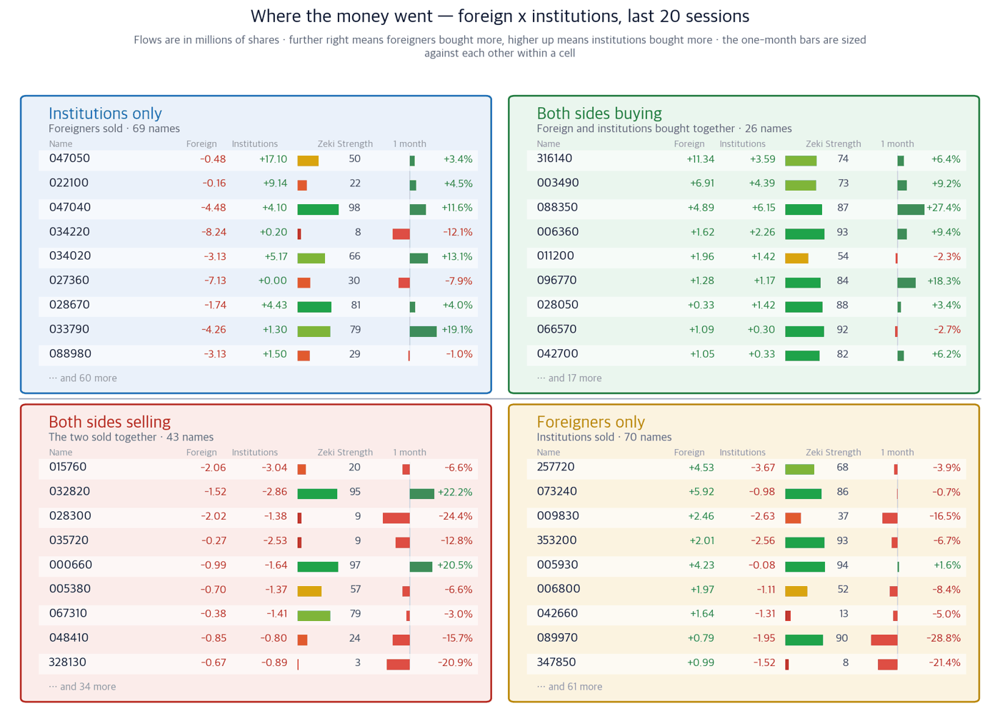

KOSPI 6,909.91 | KOSDAQ 820.64 | Korea 10-year 4.54% | U.S. 10-year 4.97% | Nasdaq Composite 26,385 |
What pressed Seoul last week was the bond market. On September 11 the KOSPI closed at 6,909.91, giving up the 7,000 line, and the KOSDAQ finished at 820.64. The same day the 10-year Korean government bond yield rose to 4.54%. The three-year crossed 4% for the first time since 2023. (Korea Economic Daily, September 14)
New York moved the other way over the weekend. On September 11 the Nasdaq Composite rose 1.16% to 26,385 and the S&P 500 ended at 7,667, after an inflation report landed close to expectations. (IBD, September 11)
So today's question is a single one: while yields were climbing like that, what were foreign investors buying? Not semiconductors. Counting net purchases over the last 20 trading days, the largest was Woori Financial Group. Korean Air was second and Hanwha Life fourth. Banks, insurers and airlines moved to the top of the list.

| The lit lamp | Today's market phase. Green means buyers have the edge, yellow means stand aside, red means do not add. |
| The filled boxes | How many of seven conditions the market passed. The more boxes, the sounder the structure underneath. |
| All boxes filled, still yellow | Something else pulled the grade down one step. The reason is printed under the picture. |
Green means buyers have the edge, yellow means stand aside, red means do not add. The KOSPI passed all seven conditions but its trend gauge is negative, so we marked it down one step to yellow. The KOSDAQ passed two and is red.
| Date | What to watch | What it changes |
|---|---|---|
| Monday, September 14 | Korea's first session of the week | The first read on how the index absorbs Friday's jump in yields |
| Wednesday, September 16 | U.S. monetary policy meeting | Futures put the odds of a hike at 87%. A hike weakens the won, and foreign net buying stops first |
| Friday, September 18 | U.S. triple witching | Volume rises and the daily swing widens. Do not read that day's direction as a trend |
When yields rise, a bank earns more on the gap between deposit and lending rates. An insurer works differently: it discounts claims it must pay far in the future at today's rate, so a higher rate lightens that burden. Life insurance ranks second in our industry table. The government is also cutting issuance of 30-year bonds for the same reason — the rise in yields. (Korea Economic Daily, September 14)
| Who | Woori Financial Group |
| What | Foreign investors bought a net 11.33 million shares over 20 trading days — the largest in the market |
| When | The 20 trading days through September 9 |
| Where | The banking group on the main board; tenth in our industry table |
| Why | Higher rates widen the deposit-to-lending margin, and money goes first to the banks raising payouts |
| How | Institutions added 3.59 million shares over the same period, eighth on that list |
Zeki Strength is 74, short of 90. Flows rank first while the share price has not moved that far yet. It is still 14.0% below its 52-week high.
| Who | Hanwha Life |
| What | Foreign investors bought 4.89 million shares and institutions 6.15 million |
| When | The 20 trading days through September 9 — fourth for foreign buyers, third for institutions |
| Where | Life insurance, which ranks second in our industry table |
| Why | Higher long yields shrink the present value of future claims, easing the capital the insurer must hold |
| How | It rose 27.4% in a month, the largest gain among today's four names |
The size of that gain is also the weak point. After 27.4% in a month, only 9.2% is left to its 52-week high. If the rise in yields stops, the reason the stock rose stops with it.
Korea and the United States are discussing building eight large reactors on U.S. soil. Korean nuclear exchange-traded funds gained 19.9% over the past month while funds holding U.S. nuclear names fell. The building expertise sits in Korea; the American names have no orders yet. (Maeil Business Newspaper, September 13)
| Who | Doosan Enerbility |
| What | It builds reactor vessels and steam generators — the main equipment of a plant |
| When | Institutions bought 5.17 million shares through September 9, fourth in the market |
| Where | Its Changwon works make that equipment |
| Why | A reactor is ordered long-lead equipment first, years before the rest |
| How | Nam-hyun Jang of Korea Investment & Securities expects its main-equipment orders to rise first |
Foreign investors sold 3.13 million shares over the same period. Only one side is buying. Over three months the price is still negative, and its distance from the 52-week high is the widest of today's four.
West Texas Intermediate sits at $100.1 a barrel. A refiner buys crude and sells products, so when crude rises the barrels already in its tanks are worth more and an inventory gain appears. Oil and gas ranks first in our industry table.
| Who | S-Oil |
| What | Its foreign ownership is among the highest of any listed Korean company |
| When | Through September 9 foreign investors added 52,000 shares and institutions 584,000 |
| Where | Its refining and petrochemical complex in Ulsan |
| Why | When Middle East shipping is disrupted, product prices rise faster than crude itself |
| How | Up 34.6% over three months, which puts Zeki Strength at 92 — the top 10% |
It is the only name today that clears all four of the conditions we count. The case rests on the oil price alone, and if crude falls the share price gives it back for the same reason.
| Theme | Name | Zeki Strength | Weight of evidence |
|---|---|---|---|
| Earns from higher rates | Woori Financial Group (316140) | 74 | Grounded |
| Earns from higher rates | Hanwha Life (088350) | 87 | Grounded |
| Nuclear orders | Doosan Enerbility (034020) | 66 | Needs checking |
| Oil at $100 | S-Oil (010950) | 92 | Well grounded |
A one-month gain, Zeki Strength of 90 or better, foreign net buying over 20 trading days, and institutional net buying over the same span. Prices are the September 11 close; flows run through September 9.
| Name | 1 Price up | 2 Strength 90+ | 3 Foreign buying | 4 Institutional buying | Met | Weight of evidence |
|---|---|---|---|---|---|---|
| Woori Financial Group (316140) | O | X | O | O | 3/4 | Grounded |
| Hanwha Life (088350) | O | X | O | O | 3/4 | Grounded |
| Doosan Enerbility (034020) | O | X | X | O | 2/4 | Needs checking |
| S-Oil (010950) | O | O | O | O | 4/4 | Well grounded |
Net share counts published by the Korea Exchange, summed over 20 trading days. These are disclosed figures, not our estimates. The last record date differs by name, so the cut-off is September 9. Every one of the 208 names we could identify is plotted. Korean stocks are labelled by their six-digit codes here.

| Each dot | One stock. Its position gives both values directly, and the two lines crossing the middle are the zero lines. The corner labels name each quadrant. |
| Dot size | The one-month move. A big dot moved a lot, up or down. |
| Dot colour | Zeki Strength. The greener the dot, the stronger the stock stands in the market. |
| Only 30 labelled | Names overlap and stop being readable. The ones crowded in the centre barely moved, so we left them unlabelled. |

| Four cells | Whether each of the two values cleared its zero line. Top right cleared both, bottom left cleared neither, the other two cleared one side only. |
| Nine per cell | Ordered by how far the stock moved. The count of the rest is printed under each cell. |
| One-month bar | Zero sits in the middle: right is a gain, left a loss. Compare lengths only inside the same cell — the scale differs by cell. |
| Zeki Strength | A 1-99 rank. Longer and greener means the stock stands stronger in the market. |
A story can be right while the money goes elsewhere, so we check them separately. Net share counts over 20 trading days for the four names above, as disclosed by the Korea Exchange, through September 9. Plus is net buying, minus is net selling.
| Name | Foreign, 20 days | Institutions, 20 days | In one line |
|---|---|---|---|
| Woori Financial Group (316140) | +11.33m | +3.59m | Both sides bought; the largest foreign net buy in the market |
| Hanwha Life (088350) | +4.89m | +6.15m | Both sides bought |
| Doosan Enerbility (034020) | -3.13m | +5.17m | Institutions only |
| S-Oil (010950) | +0.05m | +0.58m | Both sides bought, but in small size |
This table shows who has been buying. It does not forecast the price. Tested across both markets, flows on their own did not predict the following month.
Our leading industries as of September 10: oil and gas (1st), life insurance (2nd), semiconductors and equipment (3rd), construction (4th), electrical equipment (5th).
Today's names sit in those same places. Banks rank tenth and non-life insurance rose one step to seventh. Airlines fell three steps to eighth, so even though foreign investors bought 6.91 million shares of Korean Air, we did not make an airline name out of it today.
What to watch from Monday, September 14.